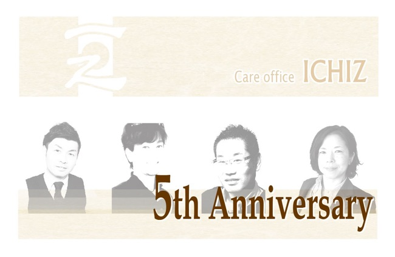

代表者より


合同会社ICHIZ 代表 吉田 慎
自己紹介
名 前：吉田 慎
生年月日：５月１９日
所持資格：介護福祉士
ガイドヘルパー
最終学歴：神奈川大学
法学部卒
MY CONTACT
Email: ichiz@b3.bunbun.ne.jp
略歴
神奈川大学法学部卒
株式会社にっぱん入社
・魚がし日本一配属
・表参道ICHIZ配属
株式会社ケア・ライフ・
コーポレーション入社
・佐賀営業所所長就任
・ケアビレッジとびかた
管理者就任
合同会社ICHIZ設立
自己紹介
名 前：宮原 朝哉
生年月日：４月１７日
所持資格：介護福祉士
ガイドヘルパー
最終学歴：九州福祉医療
専門学校
介護福祉士科卒
MY CONTACT
Email: ichiz@b3.bunbun.ne.jp
略歴
九州福祉医療専門学校
介護福祉士科卒
身体障害者通所授産施設
ワークランド桂川入社
株式会社ケア・ライフ・
コーポレーション入社
合同会社ICHIZ設立
合同会社ICHIZ 副代表 宮原 朝哉
人は地域の中で自然に生きてる存在です。これは変えられない存在であり、また超えられない存在だと思います。そんな自然人の暮らす地域の中には、「人」とつく存在の法人 (企業)も存在します。法人は資金力、経済力、発言力等で地域の中で莫大な力を持つことができる大きな存在です。時にはその大きな力で地域の自然な人を脅かす存在にもなりうるでしょう。しかしながら、地域とはあくまで自然な流れでみんなが活動出来る場であり、決して大きなカがその流れを変えることは出来ない場なのです。そう考えると、地域の中で自然人も法人も、同じ「人」とつく存在同士、その地域での価値を共有する関係でありたいと常々考えます。わたくしどもは、縁あって地域の中で法人として活動させて頂いてる存在です。そんな法人たる弊社も、法人にしか出来ない地域サービス及び活動を通じて地域の一員となり、地域の様々な価値を高めていく協力者になれれば幸いです。これが合同会社ICHIZ社員並びに従業員、私自身の思い及び理念であります。
地域の人とは、お客様、従業員、私たちが活動する場所に暮らす人々です。
企業の地域貢献とは、活動した後の地域での価値であり、その評価は地域の人の声です。
地域の価値を企業の声に企業の価値を地域の声にするのは私の責務であると感じます。地域の様々な人や声に出会える事を楽しみにし、地域と 「人」が共に発展することを願っております。
地域の価値を
企業の声へ
企業の価値を
地域の声へ
自分が本当に
やりたかった
仕事を
形に

「私自身の存在が誰かに必要としてもらえる」そんな瞬間が積み重ねられたら、とても幸せだと思います。
そして我々は、皆様の存在や想いを必要としていますので皆様にも幸せを感じて頂きたい。
「地域での事業を通して関わるすべての人が、プラスの影響を享受する形になっているのか？」を、常に問いながら日々の業務を構築していきたいと考えております。
福祉の業界は、単調なライフスタイルのレールが敷かれがちですが、我々は常に、新鮮で面白みのある企画や選択肢を地域に投げかけ、ワクワク感と共に選んで頂ける事業所で在り続けたいと思います。
皆様と共に泣いたり笑ったりしながら素敵で幸せな人生を歩んで行くために、お力添えを賜りますようお願い申し上げます。